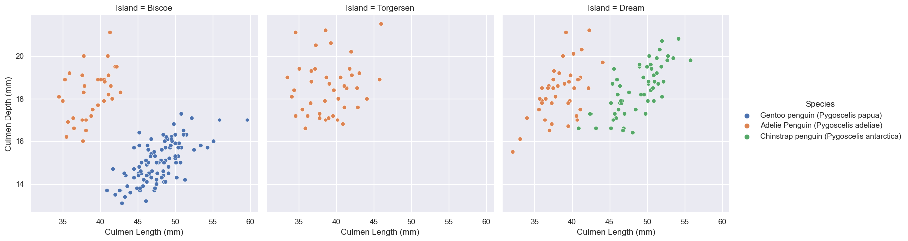
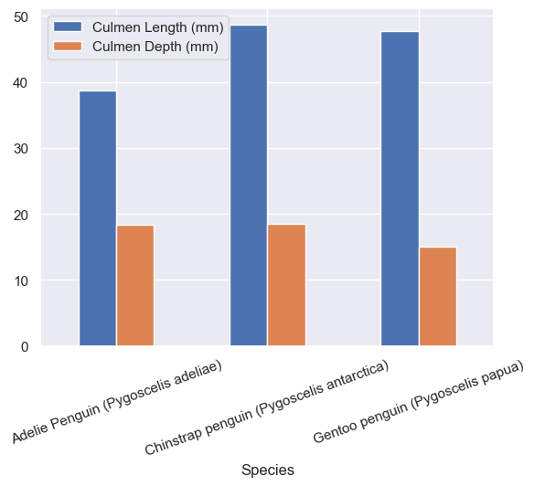
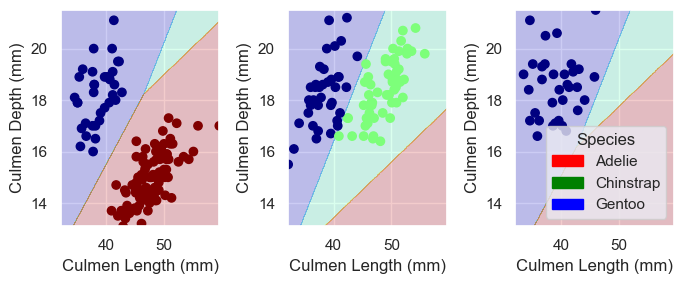
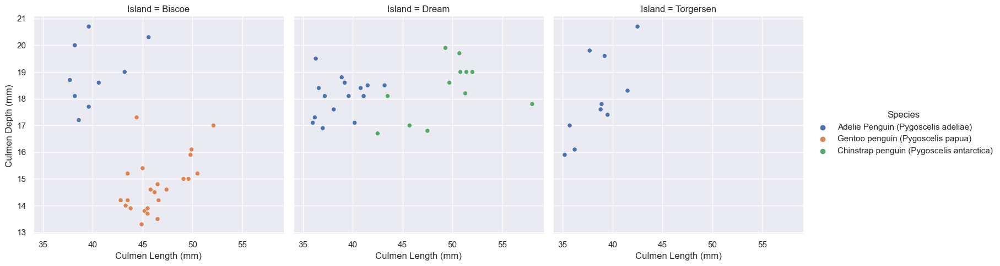

import pandas as pd
train_url = "https://raw.githubusercontent.com/middlebury-csci-0451/CSCI-0451/main/data/palmer-penguins/train.csv"
train = pd.read_csv(train_url)Penguins!
Below are some pictures of different penguins in Pygoscelis genus courtesy of wikimedia.

From left to right we have \(Pygoscelis\) \(papua\), AKA the Gentoo penguin, \(Pygoscelis\) \(antarctica\), AKA the appropriately named Chinstrap penguin, and finally \(Pygoscelis\) \(adeliae\), AKA the Adélie penguin.
The Palmer Penguins data set is a collection of physiological measurements for penguins collected by Dr. Kristen Gorman and the Palmer Station, Antarctica LTER, which is part of the Long Term Ecological Research Network. The data set contains measurements such as bill length, flipper length, and body mass for individuals from each of the three species of penguins: chinstrap, adelie, and gentoo. By analyzing these measurements, we can use various machine learning algorithms to classify each penguin into their respective species. This classification task can be performed by training a machine learning model on a portion of the data set and then using the trained model to predict the species of penguins in the remaining portion of the data set. By doing so, we can identify patterns and relationships in the data that can be used to accurately classify penguins into their respective species. We’ll decide later on which regression model to do the work. First lets import Pandas and the training data for use later.
Code
The following code is from a machine learning pipeline where data preprocessing is performed using the scikit-learn library in Python.
The first line imports the LabelEncoder class which is used to encode categorical data. The next three lines create an instance of the LabelEncoder class, fits the encoder to the \(Species\) column of the training dataset, and creates a list of unique species names from the fitted encoder. The remaining code defines a function called \(prepare\)_\(data\) that drops certain columns, removes rows with missing or invalid data, encodes the \(Species\) column using the LabelEncoder’s transform() method, and performs one-hot encoding on the remaining features using the get_dummies() method. Finally, the function returns the preprocessed DataFrame and encoded \(Species\) values as separate arrays. The last two lines of code call the \(prepare\)_\(data\) function on the training dataset and outputs the preprocessed training columns.
from sklearn.preprocessing import LabelEncoder # Import label encoder for tagging each data entry
LabelEn = LabelEncoder() # creates an instance of the LabelEncoder class
LabelEn.fit(train["Species"]) # fits the LabelEncoder to the "Species" column of the train dataset using the fit() method
species = [p.split()[0] for p in LabelEn.classes_] # creates a list called "species" that contains only the first word of each unique value in the "Species" column
def prepare_data(df): # defines a function called "prepare_data" that takes a DataFrame as input
df = df.drop(["studyName", "Sample Number", "Individual ID", "Date Egg", "Comments", "Region"], axis = 1) # drops several columns from the DataFrame using the drop() method
df = df[df["Sex"] != "."] # drops any rows where the "Sex" column contains a period (".")
df = df.dropna() # drops any remaining rows that contain missing values
y = le.transform(df["Species"]) # encodes the "Species" column using the LabelEncoder's transform() method
df = df.drop(["Species"], axis = 1) # one-hot encodes the remaining features of the DataFrame using the get_dummies() method
df = pd.get_dummies(df)
return df, y # returns the preprocessed DataFrame and the encoded "Species" values as separate arrays
X_train, y_train = prepare_data(train)
X_train # Output the preprocessed training columns| Culmen Length (mm) | Culmen Depth (mm) | Flipper Length (mm) | Body Mass (g) | Delta 15 N (o/oo) | Delta 13 C (o/oo) | Island_Biscoe | Island_Dream | Island_Torgersen | Stage_Adult, 1 Egg Stage | Clutch Completion_No | Clutch Completion_Yes | Sex_FEMALE | Sex_MALE | |
|---|---|---|---|---|---|---|---|---|---|---|---|---|---|---|
| 1 | 45.1 | 14.5 | 215.0 | 5000.0 | 7.63220 | -25.46569 | 1 | 0 | 0 | 1 | 0 | 1 | 1 | 0 |
| 2 | 41.4 | 18.5 | 202.0 | 3875.0 | 9.59462 | -25.42621 | 0 | 0 | 1 | 1 | 0 | 1 | 0 | 1 |
| 3 | 39.0 | 18.7 | 185.0 | 3650.0 | 9.22033 | -26.03442 | 0 | 1 | 0 | 1 | 0 | 1 | 0 | 1 |
| 4 | 50.6 | 19.4 | 193.0 | 3800.0 | 9.28153 | -24.97134 | 0 | 1 | 0 | 1 | 1 | 0 | 0 | 1 |
| 5 | 33.1 | 16.1 | 178.0 | 2900.0 | 9.04218 | -26.15775 | 0 | 1 | 0 | 1 | 0 | 1 | 1 | 0 |
| ... | ... | ... | ... | ... | ... | ... | ... | ... | ... | ... | ... | ... | ... | ... |
| 269 | 41.1 | 17.5 | 190.0 | 3900.0 | 8.94365 | -26.06943 | 0 | 1 | 0 | 1 | 0 | 1 | 0 | 1 |
| 270 | 45.4 | 14.6 | 211.0 | 4800.0 | 8.24515 | -25.46782 | 1 | 0 | 0 | 1 | 0 | 1 | 1 | 0 |
| 271 | 36.2 | 17.2 | 187.0 | 3150.0 | 9.04296 | -26.19444 | 0 | 0 | 1 | 1 | 1 | 0 | 1 | 0 |
| 272 | 50.0 | 15.9 | 224.0 | 5350.0 | 8.20042 | -26.39677 | 1 | 0 | 0 | 1 | 0 | 1 | 0 | 1 |
| 273 | 48.2 | 14.3 | 210.0 | 4600.0 | 7.68870 | -25.50811 | 1 | 0 | 0 | 1 | 0 | 1 | 1 | 0 |
256 rows × 14 columns
And above we’ve got a look at the dataframe we created, with all 14 columns of data points ranging from Culmen length to if they are male. Quickly though, let’s look at the context which classifies each of these three species into their respective groups.
Classification
The code below searches for the combination of categorical and numerical columns that achieve the highest accuracy score on the training data. The itertools library’s combinations function is used to generate all possible combinations of categorical and numerical columns from the all_qual_cols and all_quant_cols lists, respectively. The LogisticRegression class from scikit-learn is used to train a logistic regression model on each combination of columns, and the accuracy score of each model is compared to identify the combination that yields the highest score. The final result is printed out as a list of column names that produced the highest accuracy score on the training data. I decided to use logistic regression.
Logistic regression is a good choice when the dependent variable is categorical and we want to predict the probability of a specific outcome. In this case, the dependent variable is categorical (i.e., the species of penguins), and we are trying to predict the probability of a penguin belonging to each of the three species.
from itertools import combinations
from sklearn.linear_model import LogisticRegression
from warnings import filterwarnings
filterwarnings('ignore') # Hiding the max iteration convergence warning
# these are not actually all the columns: you'll
# need to add any of the other ones you want to search for
all_qual_cols = ["Clutch Completion", "Sex", 'Island']
all_quant_cols = ['Culmen Length (mm)', 'Culmen Depth (mm)', 'Flipper Length (mm)', 'Body Mass (g)']
final_score = 0
final_col = 0
qual_idx = 0 # value used to index 'all_quant_cols' to get current value
while qual_idx < len(all_qual_cols):
# loops through all combinations of categorical and numerical columns,
# and finally prints out the combination of columns that achieved the
# highest accuracy score on the training data.
qual = all_qual_cols[qual_idx]
qual_cols = [col for col in X_train.columns if qual in col ]
pair_idx = 0 # starts at 0 and is incremented by 1 until done
while pair_idx < len(all_quant_cols) - 1:
pair = (all_quant_cols[pair_idx], all_quant_cols[pair_idx + 1])
cols = list(pair) + qual_cols
LR = LogisticRegression()
LR.fit(X_train[cols], y_train)
if final_score < LR.score(X_train[cols], y_train):
final_col = cols
final_score = LR.score(X_train[cols], y_train)
pair_idx += 1
qual_idx += 1
print(final_col)['Culmen Length (mm)', 'Culmen Depth (mm)', 'Island_Biscoe', 'Island_Dream', 'Island_Torgersen']import seaborn as sns
# Apply the default theme
sns.set_theme()
# Create a visualization
sns.relplot(
data=train,
x="Culmen Length (mm)", y="Culmen Depth (mm)", col="Island", hue ='Species')
plt.show()
Above you can see the graphs depicting three islands with penguins where we already know to which species each group belongs. Later we can compare how accurate our prediction is versus the actual data.
from sklearn.linear_model import LogisticRegression
# this counts as 3 features because the two Clutch Completion
# columns are transformations of a single original measurement.
# you should find a way to automatically select some better columns
# as suggested in the code block above
cols = ["Flipper Length (mm)", "Body Mass (g)", "Clutch Completion_No", "Clutch Completion_Yes"]
LR = LogisticRegression()
LR.fit(X_train[final_col], y_train)
LR.score(X_train[final_col], y_train)1.0Eventually we end up with a score of 1.0, which is perfect!
Next we can look how Culmen length and depth vary across species and across the islands.
train.groupby('Island')[['Culmen Length (mm)', 'Culmen Depth (mm)']].aggregate(min).round(2)| Culmen Length (mm) | Culmen Depth (mm) | |
|---|---|---|
| Island | ||
| Biscoe | 34.5 | 13.1 |
| Dream | 32.1 | 15.5 |
| Torgersen | 33.5 | 16.6 |
train[["Species","Culmen Length (mm)", "Culmen Depth (mm)"]].groupby("Species").mean().plot.bar(rot=20)
plt.show(sns)
With info from the above graphs we can see the rough distrobutions across all three islands, and it looks like only Adelie penguins were on Torgersen island and the other two had Adelie and Gentoo or Adelie and Chinstraps.
from matplotlib.patches import Patch
import matplotlib.pyplot as plt
import numpy as np
def plot_regions(model, X, y):
# Get the first two columns of the input dataframe
x0 = X[X.columns[0]]
x1 = X[X.columns[1]]
# Get the qualitative features of the input dataframe
qual_features = X.columns[2:]
# Create a figure with subplots for each qualitative feature
fig, axarr = plt.subplots(1, len(qual_features), figsize = (7, 3))
# Create a grid to evaluate the model over
grid_x = np.linspace(x0.min(),x0.max(),501)
grid_y = np.linspace(x1.min(),x1.max(),501)
xx, yy = np.meshgrid(grid_x, grid_y)
# Flatten the grid for easier evaluation
XX = xx.ravel()
YY = yy.ravel()
for i in range(len(qual_features)):
# Create a dataframe with all values set to 0
XY = pd.DataFrame({
X.columns[0] : XX,
X.columns[1] : YY
})
# Set the current qualitative feature to 1
for j in qual_features:
XY[j] = 0
XY[qual_features[i]] = 1
# Predict the class for each point in the grid and reshape the result
p = model.predict(XY)
p = p.reshape(xx.shape)
# Use a contour plot to visualize the decision regions
axarr[i].contourf(xx, yy, p, cmap = "jet", alpha = 0.2, vmin = 0, vmax = 2)
# Get the data points that correspond to the current qualitative feature
ix = X[qual_features[i]] == 1
# Plot the data points
axarr[i].scatter(x0[ix], x1[ix], c = y[ix], cmap = "jet", vmin = 0, vmax = 2)
# Set the axis labels
axarr[i].set(xlabel = X.columns[0],
ylabel = X.columns[1])
# Create a legend for the different classes
patches = []
for color, spec in zip(["red", "green", "blue"], ["Adelie", "Chinstrap", "Gentoo"]):
patches.append(Patch(color = color, label = spec))
plt.legend(title = "Species", handles = patches, loc = "best")
# Adjust the spacing between subplots
plt.tight_layout()The above code defines a function named \(plot\)_\(regions\) that takes three arguments: model, \(X\), and \(y\). This function is intended to be used for plotting the decision boundaries of a classifier for a dataset with two continuous features and one or more categorical features.
The first few lines of the function extract the two continuous features (i.e., the first two columns) and the categorical features from the input data \(X\). Then, the function creates a grid of points spanning the range of the two continuous features, which is used for plotting the decision boundaries.
The main loop of the function iterates over each categorical feature in turn. For each feature, a new DataFrame \(XY\) is created that includes all combinations of the two continuous features and all possible values of the categorical feature (i.e., 0 or 1). The classifier model is then used to predict the class labels for each point in this grid, and the resulting predictions are plotted using a contour plot.
We will use this code to visualize decision boundaries of a classification model trained on the Palmer Penguins dataset, with different qualitative features.
Predict
plt.close() # Clearing the old plot
plot_regions(LR, X_train[final_col], y_train)test_url = "https://raw.githubusercontent.com/middlebury-csci-0451/CSCI-0451/main/data/palmer-penguins/test.csv"
test = pd.read_csv(test_url)sns.relplot(
data=test,
x="Culmen Length (mm)", y="Culmen Depth (mm)", col="Island", hue ='Species')
plt.show(sns)

X_test, y_test = prepare_data(test)
LR.score(X_test[final_col], y_test)1.0Above was a lot to take in, but in short we plot the decision boundary made by the \(plot\)_\(regions\) function and we can compare our decision with the actual labels from the original data. We got a score of \(1.0\) which means our model works on 100% of our penguin data points to predict which species they belong to based on culmen depth and length. We divided the penguins across three groups cutting two lines between them, labeling the Adelie red, Gentoo blue, and Chinstrap Green. Maybe now the next time you see one of these three species, you will be able to identify them!